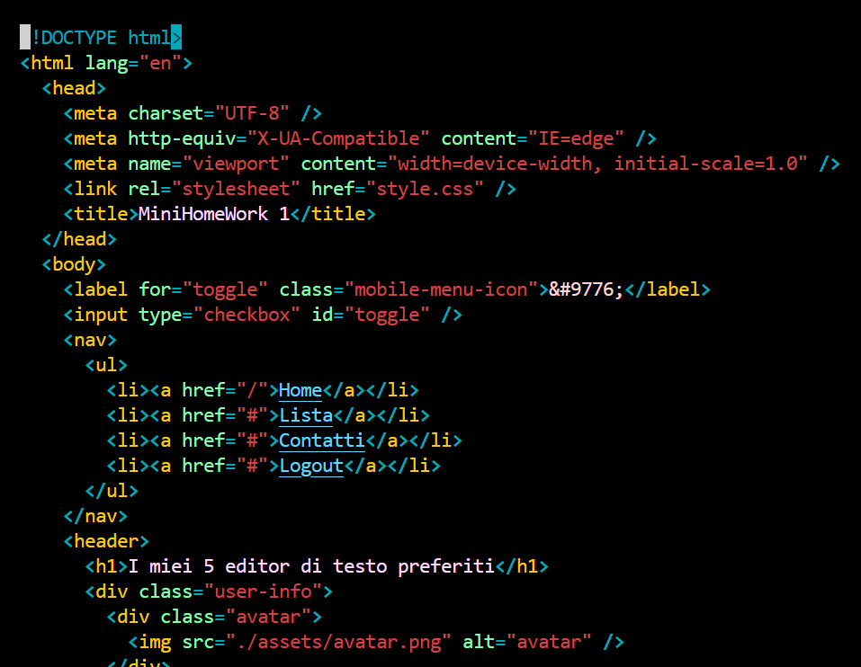
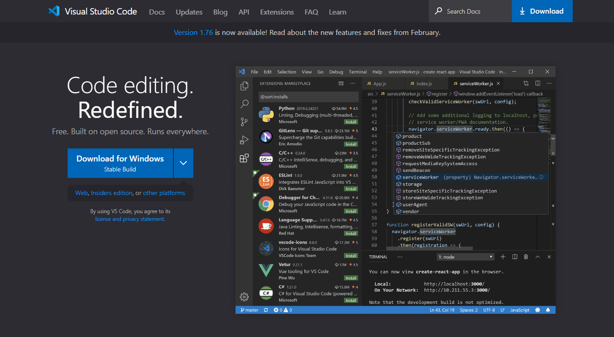

Premetto subito che non ho mai provato il principale "antagonista" di Vim, cioè Emacs, che probabilmente è anche più potente in termini di funzionalità, estensibilità e interazione con la Shell, ma mi sembra che abbia una curva di apprendimento più ripida. Ad ogni modo, Vim per me è l' editorper antonomasia La prima cosa che installo su una nuova macchina è necessariamen te Vim. Non so come faccia la gen te a vivere senza usare dd, del, yy, n. Certo, se non lo si conosce non si riuscirà mai a chiuderlo...
Essenziale. L'unico motivo per cui in realtà ora utilizzo principalmente Visual Studio Code per programmare è l'estensione che emula la sintassi di Vim. A parte ciò, effettivamente è molto valido. Syntax highlighting, supporto a Git, estendibile, leggero, veloce, multi-piattaforma, supporta il debugging. Se integrasse an che una semplice installazione di un compilatore di C la razza umana potrebbe fare il grande salto in avanti e abbandonare per sempre Dev-C++.
Sorprendente. Notepad++ è semplicemente la versione decente di " Blocco note" di Windows. Ci si può programmare, grazie anche all'interfaccia a tab, che però per qualche motivo con me tende sempre a degen erare finendo per includere file di cui avevo rimosso l'esistenza e impedendomi di trovare quelli che cerco. Ovviamente, ha un difetto con genito che è l'essere disponibile solo per Windows.
Meglio di niente.